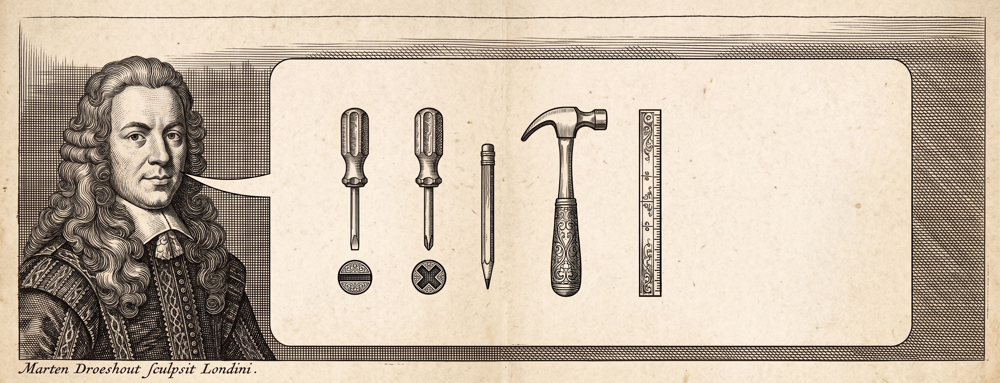
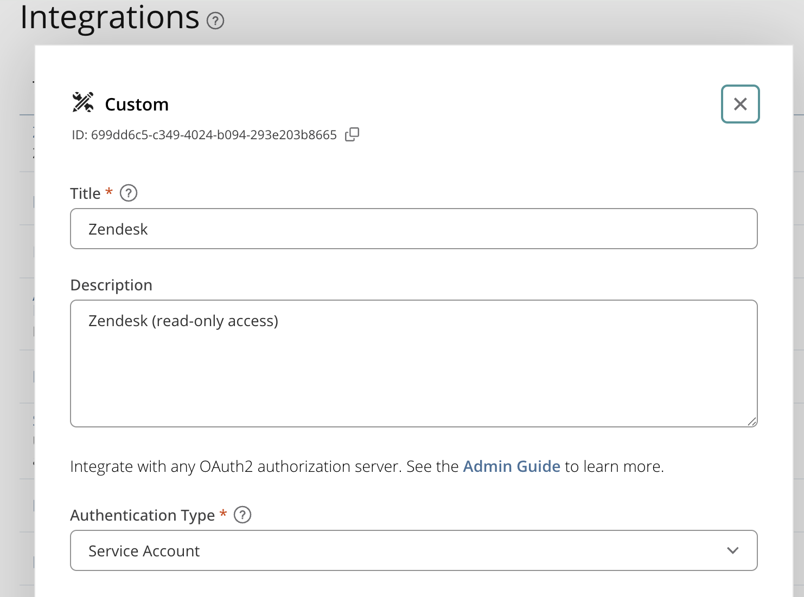
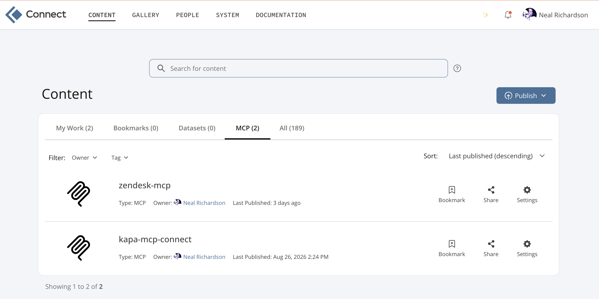
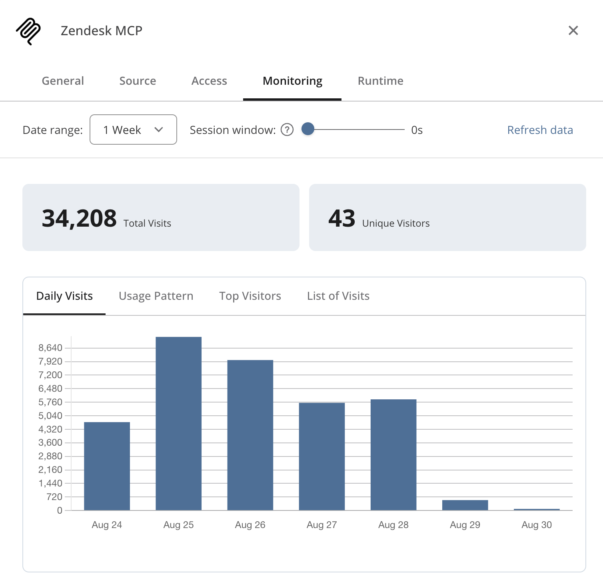

A WITTIE
AND PLEASANT
COMEDIE
Called
MCP, or not MCP?
Miſplac’d among the Tragedies.
As it is to be acted at the poſit::conf and in the Cloud.
VVritten by NEAL RICHARDSON.
Houston,
Printed for the Author, and are to be had at
enpiar.com/mcp-posit-conf-2026
2026.
Act I
▐▛███▜▌ Claude Code v2.1.158
▝▜█████▛▘ Opus 5 (1M context) · Claude Enterprise
▘▘ ▝▝ ~/code
❯ I prithee, friend, bestow thy help with https://posit.zendesk.com/agent/tickets/129426
▐▛███▜▌ Claude Code v2.1.158
▝▜█████▛▘ Opus 5 (1M context) · Claude Enterprise
▘▘ ▝▝ ~/code
❯ I prithee, friend, bestow thy help with https://posit.zendesk.com/agent/tickets/129426
⏺ Fetch(https://posit.zendesk.com/agent/tickets/129426)
⎿ Received 259 bytes (200 OK)
⏺ Alas, that door is locked against my hand:
the agent view demands a login first,
and I have neither token, key, nor tool
that speaks to Zendesk on thy warrant here.
I fetched the page; it gave an empty shell.
Wilt thou paste the ticket's text to me
(the subject, body, and the comment thread),
and say what aid thou seekest: triage, or
a bug to reproduce, or answer drafted.
MCP is designed to solve this
You can write and host your own MCP servers
Act II: What’s in a Name?
MCP is specification for providing tools to LLMs

MCP is an API standard
Local vs. Remote MCP
Local
- Runs on your machine
claude mcp add name-here -- uvx --from "git+https://github.com/user/repo"
Local vs. Remote MCP
Local
- Runs on your machine
claude mcp add name-here -- uvx --from "git+https://github.com/user/repo"
Remote
- Runs somewhere else
claude mcp add --transport http name-here https://example.com/mcp
Act III: MCP, or not MCP?
I come to bury MCP, not to praise it

https://uxplanet.org/mcp-is-dead-cf16b667ba6d
Skills
Just prose/markdown with additional context and instructions for the agent
If the agent can do everything with tools it already has (Bash, Fetch, etc.) then a Skill is probably enough
Otherwise, Skill is complement: we’re talking (MCP + Skill) vs. (CLI + Skill)
Skill + MCP = Plugin
MCP vs. CLI
Use CLI when:
CLI already exists, is widely available, and in the training data
Your agent has Bash available to call the CLI
MCP vs. CLI
Use CLI when:
CLI already exists, is widely available, and in the training data
Your agent has Bash available to call the CLI
But…
Now we have to worry about running shell commands
CLIs often general purpose, hard to allow agent to run only some of its commands
Act IV: Something Wicked This Way Comes
The lethal trifecta
Access to private data
Exposure to untrusted content
Ability to exfiltrate
https://simonwillison.net/2025/Jun/16/the-lethal-trifecta/
We can make good choices when we write our own tools
Best practices
space
Best practices
1. Only define the tools you need
Best practices
2. Make responses concise
Best practices
3. Sanitize sensitive data
n***@posit.co
If you’re going to write your own, make it remote MCP
Easy distribution: just share the URL, nothing to download and run locally
No shell access required, so it works everywhere
Easy authentication: MCP supports OAuth, so no long-lived credentials, no passwords in the agent context
Exception: when you need to access local files
Act V: All’s Well That Ends Well
▐▛███▜▌ Claude Code v2.1.158
▝▜█████▛▘ Opus 5 (1M context) · Claude Enterprise
▘▘ ▝▝ ~/code
❯ Please use `fastmcp` to make an MCP server that ...Posit Connect integration, not Zendesk API keys


▔▔▔▔▔▔▔▔▔▔▔▔▔▔▔▔▔▔▔▔▔▔▔▔▔▔▔▔▔▔▔▔▔▔▔▔▔▔▔▔▔▔▔▔▔▔▔▔▔▔▔▔▔▔▔▔▔▔▔▔▔▔▔▔▔▔▔▔▔▔▔▔▔▔▔▔▔▔▔▔▔▔▔▔▔▔▔▔▔▔▔▔▔▔▔▔▔▔▔▔▔▔▔▔▔▔▔▔▔▔▔▔▔▔▔▔▔▔▔▔▔▔▔▔▔▔▔▔▔▔▔▔▔
Zendesk-mcp MCP Server
Status: △ needs authentication
Auth: ✘ not authenticated
URL: https://connect.example.com/zendesk-mcp/mcp
Config location: ~/.claude.json [project: ~/code/mcp-posit-conf-2026]
❯ 1. Authenticate
2. Disable
↑/↓ to navigate · Enter to select · Esc to back❯ /mcp
⎿ Authentication successful. Connected to zendesk-mcp. ▐▛███▜▌ Claude Code v2.1.158
▝▜█████▛▘ Opus 5 (1M context) · Claude Enterprise
▘▘ ▝▝ ~/code
❯ I prithee, friend, bestow thy help with https://posit.zendesk.com/agent/tickets/129426
⏺ I'll fetch that ticket up anon.
⏺ zendesk - get_ticket (ticket_id: 129426)
⏺ zendesk - list_ticket_comments (ticket_id: 129426)
⏺ Ticket 129426 — "Posit Connect Authentication Migration"
The customer's concern, as it now stands:
Today their Connect binds to Active Directory,
yet they would move to Entra ID for SSO,
that MFA might guard each entering soul.
They ask: is such a passage yet supported,
by SAML or OIDC — and which of these
doth Posit counsel for the enterprise?
...Usage monitoring on Connect

MCP, or not MCP?
MCP is (just) an API standard for AI agents
Writing and deploying your own remote MCP servers can unlock superpowers for your agentic workflows
AI brings inherent security risks, but a well designed MCP server can mitigate them
You (and your agent) can easily write custom MCP servers
Posit Connect is a great place to host them